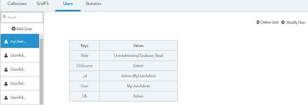
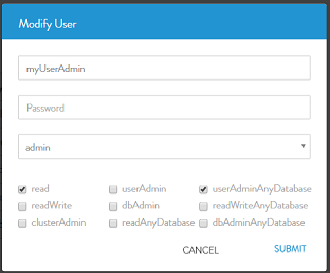

- Select a user which you want to modify and click Modify User.

A Modal is opened. See figure below.

- Perform the following:
- Password: You can reset your password.
- Privileges: You can modify the privileges by selecting/Unselecting any of the checkboxes.
- Click Submit
The User is refreshed along with the new changes.
previousnext